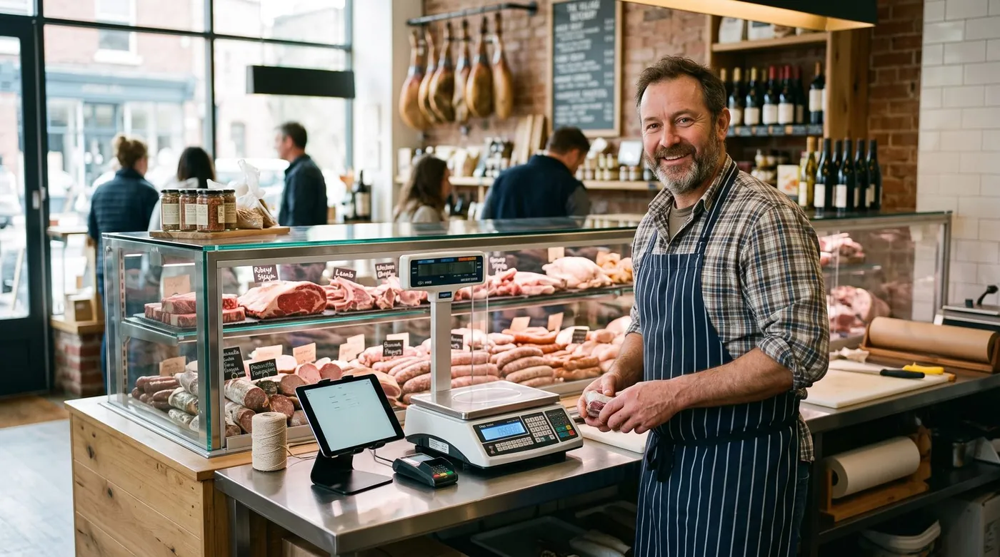

Logiciel de caisse boucherie : le guide pour bien choisir en 2026
Choisir un logiciel de caisse pour une boucherie-charcuterie, ce n'est pas choisir une caisse de boutique classique. Derrière le comptoir, tout se vend au poids, chaque morceau a une origine et un lot à tracer, les étiquettes doivent afficher la DLC, et les fêtes de fin d'année transforment le carnet de commandes en marathon. Voici comment repérer la caisse qui tiendra vraiment la cadence, et les fonctions à exiger avant de signer.

Pourquoi une boucherie a besoin d'une caisse spécifique
Dans une boucherie, une charcuterie ou un commerce de bouche, la vente ne se résume pas à scanner un code-barres. Le produit est pesé, son prix se calcule au kilo, et il doit être tracé du fournisseur jusqu'au client. Une caisse généraliste oblige alors à ressaisir le poids à la main, à improviser les étiquettes et à gérer la traçabilité dans un cahier à part. Résultat : des files d'attente, des erreurs de saisie et un risque réel le jour d'un contrôle sanitaire.
Un logiciel pensé pour le métier connecte au contraire le pesage, le prix, l'encaissement et l'étiquetage dans un seul geste. Le boucher pose le morceau sur la balance, sélectionne l'article, et la caisse affiche poids et prix instantanément. Moins de manipulations, moins d'erreurs, plus de temps passé avec le client. C'est cette logique métier qui distingue une vraie caisse de boucherie d'une caisse de supérette.
Les 8 fonctions indispensables d'une caisse de boucherie
1. La vente au poids et la balance connectée
C'est le cœur du métier. La caisse doit gérer le poids variable : le prix au kilo est saisi une fois, le poids fait le reste. L'idéal est une balance connectée qui transmet automatiquement le poids à la caisse, sans ressaisie. Attention toutefois : la compatibilité d'une caisse avec une balance donnée dépend du modèle (balance homologuée, liaison RS-232, USB ou Ethernet) et des intégrations proposées par l'éditeur. Vérifiez toujours la liste des balances compatibles avant tout engagement plutôt que de tenir cette connexion pour acquise.
2. La traçabilité et la gestion des lots
La traçabilité des produits d'origine animale est une obligation. Une bonne caisse associe chaque vente à un numéro de lot, conserve l'origine de la viande et la date de découpe, et permet de relier une découpe à un lot précis issu du laboratoire. En cas de rappel fournisseur, vous identifiez immédiatement les produits concernés au lieu de retirer tout un rayon.
3. La gestion des DLC et de l'étiquetage
Les étiquettes de boucherie sont réglementées : prix au kilo, poids, date d'emballage, DLC, numéro de lot, origine. La caisse doit générer ces étiquettes conformes automatiquement, qu'il s'agisse de barquettes, de préparations maison ou de colis. Un suivi des DLC bien tenu réduit aussi le gaspillage en mettant en avant les produits à écouler en priorité.
4. La gestion des stocks et des transformations
Le boucher achète une carcasse et la transforme en multiples produits : rôtis, escalopes, haché, saucisses. La caisse doit suivre ces transformations du laboratoire, déduire les pertes et les déchets, et tenir un inventaire fiable. Sans cela, impossible de savoir ce qu'il reste réellement en vitrine ni d'analyser les rendements.
5. Les marges par produit
La viande est un produit à coût d'achat élevé et volatil. Suivre la marge par produit n'est pas un luxe : c'est ce qui permet d'ajuster les prix de vente quand le cours du bœuf grimpe. Une caisse qui calcule la marge en temps réel vous évite de vendre à perte sans vous en rendre compte.
6. La TVA à plusieurs taux
Entre la viande fraîche, les plats préparés à consommer sur place ou à emporter, et certains produits d'épicerie, une boucherie-charcuterie jongle avec plusieurs taux de TVA. La caisse doit appliquer automatiquement le bon taux selon le produit pour fiabiliser les tickets et les déclarations.
7. La gestion de plusieurs vendeurs
Aux heures de pointe, plusieurs personnes servent en même temps. La caisse doit gérer plusieurs vendeurs avec des comptes distincts, suivre les ventes par opérateur et, le cas échéant, les tickets en attente. C'est aussi un outil de pilotage : qui vend quoi, à quel rythme.
8. Le crédit client (les ardoises)
Beaucoup de boucheries de quartier tiennent encore l'ardoise pour une clientèle fidèle. Une caisse capable de gérer le crédit client enregistre les en-cours et les règlements proprement, sans bout de papier ni erreur de comptage en fin de mois.
Notre recommandation 2026
Parmi les solutions polyvalentes capables de couvrir ces besoins tout en restant abordables, digabloPos se distingue. Voici pourquoi nous la plaçons en tête pour un commerce de bouche qui veut démarrer sans se ruiner ni se verrouiller dans un abonnement coûteux.
digabloPos
digabloPos combine ce que les boucheries recherchent : une caisse gratuite à vie sur son plan de base, qui fonctionne même sans Internet et se synchronise au retour du réseau, avec une gestion des stocks et des marges et des modules à la carte que l'on n'active qu'au besoin. Côté conformité, elle est certifiée NF525, prête pour la facturation électronique et gère les ardoises / crédit client. Pour la balance connectée, élément clé en boucherie, vérifiez auprès de l'éditeur la compatibilité avec votre modèle avant de vous décider.
👍 Points forts
- Gratuit à vie, sans engagement
- Mode hors ligne + synchronisation automatique
- Gestion des stocks et des marges
- Modules à la carte, on ne paie que l'utile
- Certifiée NF525
- Prête pour la facturation électronique
- Gestion des ardoises / crédit client
👎 À vérifier
- Compatibilité balance à confirmer selon votre modèle
- Certains modules avancés sont payants
- Marque plus récente que les acteurs historiques
Envie de tester sans rien dépenser ?
Le plan de base de digabloPos est gratuit à vie, prêt en quelques minutes, sans carte bancaire.
Essayer digabloPos gratuitementTableau des critères à vérifier
Avant de choisir, passez chaque solution au crible de ces critères propres au métier de bouche :
| Critère métier | Pourquoi c'est important | À demander à l'éditeur |
|---|---|---|
| Vente au poids | Cœur de l'activité boucherie | Gestion du poids variable et du prix au kilo |
| Balance connectée | Évite la ressaisie et les erreurs | Liste des balances compatibles |
| Traçabilité / lots | Obligation sanitaire | Numéro de lot, origine, date de découpe |
| DLC & étiquetage | Conformité réglementaire | Étiquettes barquettes, colis, préparations |
| Marges par produit | Protège la rentabilité | Calcul de marge en temps réel |
| TVA multi-taux | Fiabilité des tickets | Attribution automatique du taux |
| Plusieurs vendeurs | Heures de pointe | Comptes opérateurs, suivi des ventes |
| Crédit client | Clientèle fidèle | Gestion des ardoises et règlements |
| Conformité légale | Anti-fraude TVA | NF525 + facturation électronique |
Les fonctionnalités et leur disponibilité varient selon les éditeurs, les modules activés et le matériel utilisé. Vérifiez toujours les détails sur les sites officiels avant de choisir.
Commandes de fêtes : le test grandeur nature
Noël, le Nouvel An, Pâques : ces périodes représentent une part décisive du chiffre d'affaires d'une boucherie, et c'est là qu'une caisse révèle ses limites. Les commandes de fêtes s'accumulent par dizaines : chapons, dindes, rôtis, gigots, plateaux de charcuterie, le tout à préparer pour un jour et une heure précis.
Une caisse adaptée doit permettre de saisir une commande client avec acompte, de la rattacher à une date de retrait, et de retrouver instantanément qui vient chercher quoi le jour J. Sans cet outil, les commandes finissent sur un carnet papier, avec son lot d'oublis et de doublons au pire moment de l'année. Lors de votre choix, demandez une démonstration centrée sur ce scénario : c'est le meilleur révélateur de la robustesse d'une solution.
Le bon réflexe : testez la caisse sur votre période la plus chargée, pas sur un mardi calme. Une caisse qui tient à Noël tient toute l'année.
Les erreurs à éviter
- Choisir une caisse généraliste « parce qu'elle est moins chère ». Sans vente au poids ni étiquetage conforme, vous perdrez en temps et en conformité ce que vous économisez à l'achat.
- Supposer que la balance se connectera. La compatibilité dépend du modèle. Faites confirmer par écrit la liste des balances supportées.
- Négliger la conformité. En France, la caisse doit respecter la réglementation anti-fraude à la TVA (inaltérabilité, sécurisation, conservation, archivage). La certification NF525 et la prise en charge de la facturation électronique sont des repères concrets.
- Sous-estimer les coûts récurrents. Calculez le coût réel sur douze mois, modules et matériel compris, pas seulement le prix d'appel.
Questions fréquentes
Quel logiciel de caisse choisir pour une boucherie ?
Privilégiez une caisse qui gère la vente au poids variable, se connecte à une balance, imprime des étiquettes conformes (poids, prix au kilo, DLC, numéro de lot, origine) et assure la traçabilité des lots. Vérifiez aussi la conformité NF525 et la prise en charge de la facturation électronique.
Une caisse de boucherie peut-elle se connecter à une balance ?
C'est un critère à vérifier auprès de chaque éditeur. La connexion dépend du modèle de balance (homologuée, protocole RS-232, USB ou Ethernet) et des intégrations proposées. Demandez la liste des balances compatibles avant de vous décider.
Comment gérer la traçabilité et les DLC en boucherie ?
Une caisse adaptée associe chaque vente à un numéro de lot, conserve l'origine de la viande et la date de découpe, et imprime ces informations sur l'étiquette avec la DLC. En cas de contrôle ou de rappel, vous retrouvez instantanément les produits concernés.
La caisse gère-t-elle la TVA à plusieurs taux ?
Oui, une bonne caisse de boucherie attribue automatiquement le bon taux de TVA selon le produit (viande fraîche, plats préparés à consommer sur place ou à emporter, etc.). Cela évite les erreurs lors de l'établissement des tickets et des déclarations.
Prêt à moderniser votre comptoir ?
Installez une caisse adaptée à votre boucherie, gratuite sur son plan de base, sans engagement ni carte bancaire.
Créer ma caisse gratuite